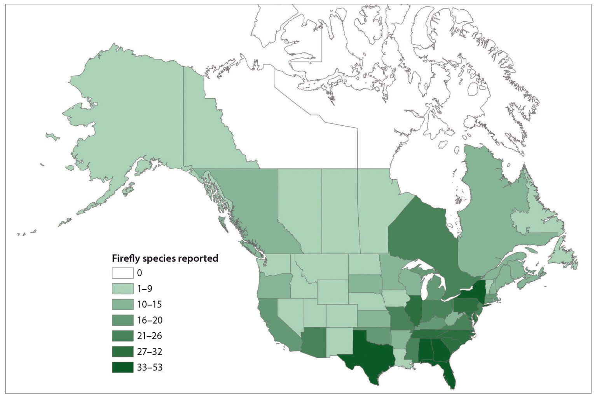

Quick Facts
- Size: 0.2-1 inch
- Weight: 20-200 milligrams
- Lifespan: 1-2 years as larva; 2-4 weeks as adult
- Conservation Status: Status varies: Least Concern - Threatened
- Range: Temperate and tropical regions worldwide, except Antarctica
Key Nighttime Adaptations
Fireflies are able to produce a flashing light thanks to a chemical reaction in their abdominal organs. This light is only visible in the darkness of night and allows them to find a mate, communicate, and warn predators of their horrible taste.
Diet
As larvae, fireflies live in the soil and eat worms, slugs, snails, and other woodland pests. Adult fireflies eat little to nothing.
Role in Ecosystem
Despite what their name insists, fireflies are actually considered beetles, not flies. As larvae, they help control the population of small invertebrates in their habitat. As adults, fireflies biggest role in the ecosystem is actually helping in pollination as they snack on nectar. As adults they are not prey to many as they taste so bad.
Fun Fact: Adult males can release their foul-tasting, toxic blood to deter bold predators from trying to eat them, although most birds and typical insect predators know better than to try to eat a firefly.

Light Pollution's Effect on Fireflies
Artificial light at night has been detrimental to fireflies. Due to the interfering artificial light, they are unable to communicate, find mates, or reproduce. In recent years, firefly populations have decreased drastically.